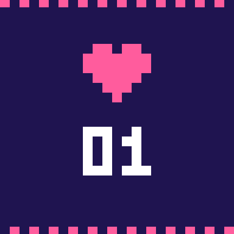
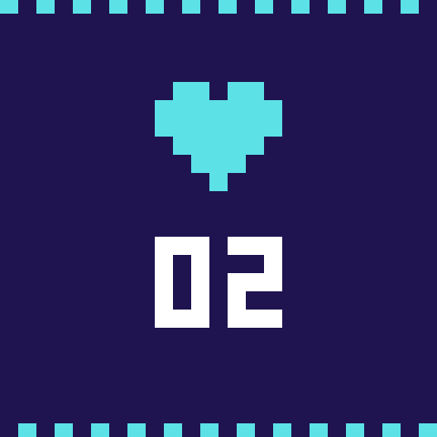
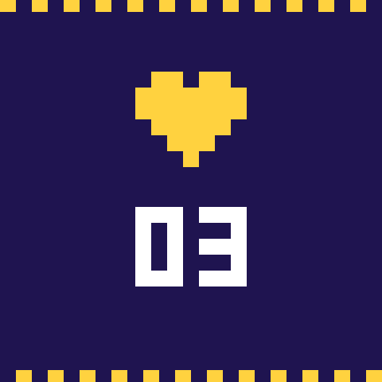
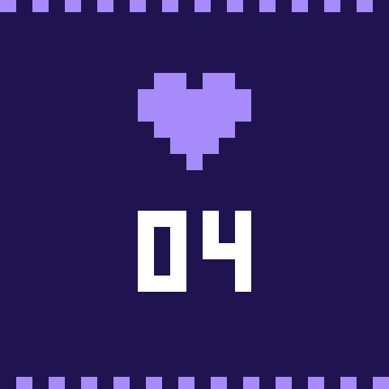

Mikołaj · ul. Przykładowa 4 · Kraków
A Letter in Four Pictures
Dear friend,
I have been meaning to write for some time, and kept putting it off for the same reason people always do — the feeling that nothing much had happened worth the postage. Then I went looking through this year's pictures and found four I could not stop returning to. So this is that letter, and the pictures are enclosed with it, in the order they happened.

The first one is from the beginning of the year, when the cold was still the kind you could lean against. I remember thinking the light would not hold for more than a minute, and it didn't — I took three frames and two of them are useless. This is the third. Everything that makes it work is accidental, which I have decided to stop being embarrassed about.
Afterwards we walked back the long way and argued pleasantly about whether a photograph counts as a memory or only as a receipt for one. I still think it is the first thing. You will tell me I am wrong, and you will do it at length, and I am looking forward to it.
That was more or less how the first months went: too cold to do anything ambitious, and just bright enough to make me want to. I got into the habit of carrying the camera on errands, which is how most of what follows came to exist.

The second belongs to the spring, when I was travelling more than was strictly sensible. I have no note of where it was taken. What I do remember is the quiet just after — the particular quiet of a place that is used to people passing through and has stopped making a fuss about it.
I had meant to keep a proper record of that trip and managed four entries, all of them about food. Everything else I would have to reconstruct from pictures, which is either an argument for taking more of them or an argument against trusting them. I have not decided which.

The third is the one I would send if I were only allowed to send one. It is not the best of the four by any measure I could defend, but it is the only one where I can still hear what was being said just outside the frame.
We stayed out far later than we meant to that evening. Someone had brought the wrong kind of wine and nobody minded; the whole thing had the unhurried shapelessness that only happens when no one is due anywhere in the morning. I took exactly one picture all night, which I think was the correct number.
And then the year turned, as it does, faster at the end than at the beginning. There was a stretch in the autumn I can barely account for — work, mostly, and a long run of weather that made everything look the same.

The fourth was not meant to be anything. I took it on the way home with cold hands and did not look at it for months. It has turned out to be the one I like best, and I suspect that is the whole lesson of the year, delivered rather more neatly than I deserved.
Write back when you have a moment — properly, not in a single line. Tell me what your four would be.
Enclosures: four plates.